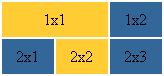
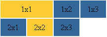
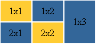

Главная | Оглавление | Словарь
В этой главе мы поговорим о параметрах colspan и rowspan. Colspan - определяет количество столбцов, на которые простирается данная ячейка, а rowspan - количество рядов (эти параметры могут принимать значение от 2 и больше, т.е. наша ячейка может растягиваться на два и более столбца (ряда)). Теперь чтобы было все понятно обратимся к примерам.

В этом примере мы использовали параметр colspan=2, прописав его для ячейки 1х1. Код будет выглядеть следующим образом:
<tr>
<td height="35" bgcolor="#FFCC33" colspan="2"> <center>1x1</center> </td>
<td width="50" bgcolor="#336699"> <center>1x2</center> </td>
</tr>
<tr>
<td height="35" width="50" bgcolor="#336699"> <center>2x1</center> </td>
<td width="50" bgcolor="#FFCC33"> <center>2x2</center> </td>
<td width="50" bgcolor="#336699"> <center>2x3</center> </td>
</tr>
</table>
Прошу вас обратить внимание, на то, что параметр width для ячейки 1х1 в нашем примере не указан, если вас так тянет задавать этот параметр, то в нашем примере для ячейки 1х1 его надо было бы прописать равным 100 пикселям, т.к. все-таки ячейка 1х1 длинее других в два раза.
И второе на что прошу вас обратить внимание, в нашем примере нет ячейки 1х3, т.е. в первом ряду всего лишь две ячейки, т.к. ячейка 1х1 равна сама по себе двум ячейкам по длинне (что мы и указали параметром colspan). Если бы мы прописали ячейку 1х3, тогда у нас получилась бы такая ерунда:

Теперь, когда мы разбрались с параметром colspan, разберемся с параметром rowspan. Принцип действия тут тот же:

Попробуйте сами написать код для такой таблицы (подсказываю, тут у нас должна исчезнуть ячейка 2х3). А для полного закрепления полученных знаний можете написать еще и код для такой таблицы (я не издеваюсь, просто вы так лучше усвоите):

Если ничего не получится, то вы можете посмотреть ответы здесь, а кто все понял, тот молодец и может подняться на следущую ступеньку.